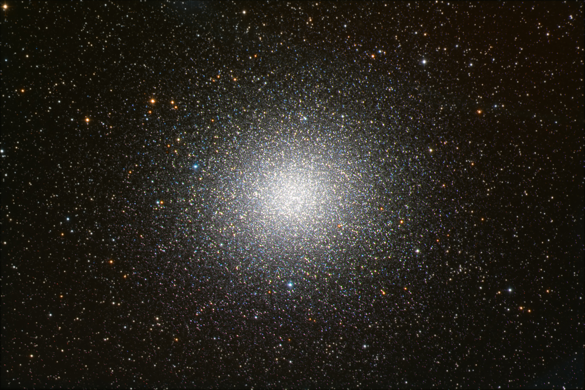

Simon Henleywillis
Simon Henleywillis
Welcome!
I am a Masters student in the X-ray Binaries Research Group at University College Cork, Ireland. I graduated from UCC with a BSc in Astrophyiscs in September 2014. I've had comprehensive experience in optical and X-ray astronomy and the analysis of dynamically-formed ultra-compact binaries over the past three years with research projects in University College Cork, University of British Columbia, and San Francisco State University. My primary academic interest is searching for X-ray sources in large star clusters and identifying possible optical counterparts. I am also very passionate about the future of space exploration and hope to eventually pursue a career related to this field. I'm currently working on a publication which is briefly described below.
Research
Ultra-Compact Binaries: Omega Centauri
Omega Cen is the largest and brightest globular cluster associated with our galaxy and was one of the first globular clusters to be observed with the Chandra X-ray Observatory. Since then, it has been the subject of numerous research papers because of the large and diverse population of stars. Because it is so different from other globular clusters which belong to the Milky Way, it has been suggested that ω Cen is all that remains of a smaller galaxy that was captured by ours in the past (Noyola et al. 2008).

One of the aims of this project is to produce a high-quality, high-detailed list of X-ray-emitting sources contained within ω Cen. Binary star systems release large amounts of energy into the surrounding medium and it is accepted that binaries can play a significant role in the growth and stability of globular clusters. Analysing the behaviour and properties of such systems can contribute to the understanding of dynamical cluster evolution (Hut et al. 1992). A previous survey of sources in ω Cen produced a list of 45-70 cluster members including sources such as cataclysmic variables and a quiescent neutron star (Haggard et al. 2010). In 2013 a paper was released reporting 59 optical counterparts of which ~40 were thought to belong to the cluster (Cool et al. 2013). Collaborators on this project include Adrienne M. Cool, Daryl Haggard, and Craig Heinke. We hope to publish a full analysis of a new deep exposure of the cluster this year with a detailed census of the sources contained within.

© Simon Henleywillis, 2015
Image credit: NASA